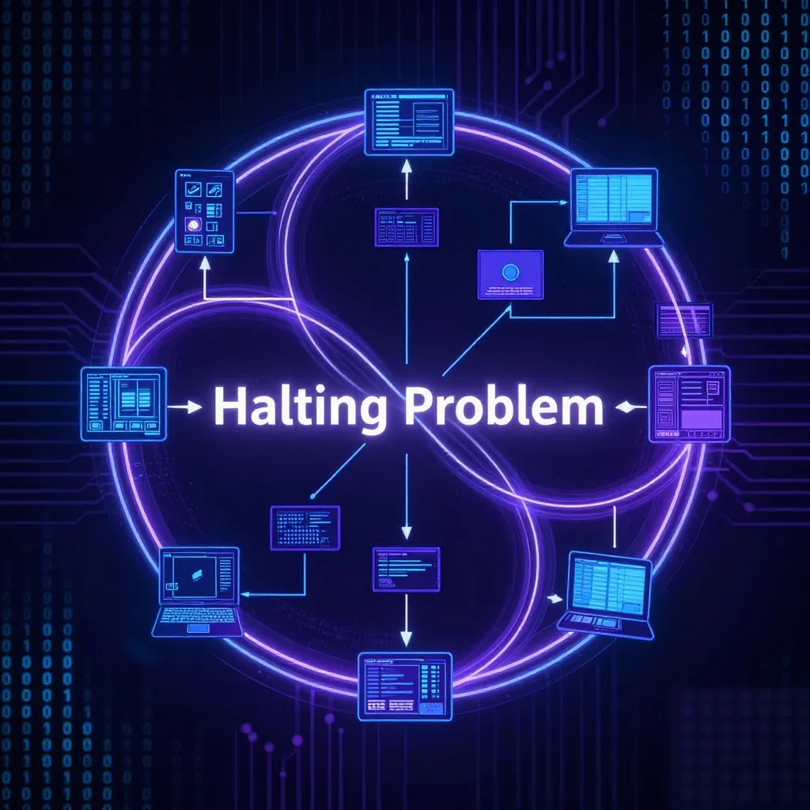

6 Les ondes de choc
6.1 Au-delà des mathématiques
Les ondes se propagent. Ce qui semblait être une curiosité de logicien — un article de trente pages publié en 1931 par un jeune Autrichien — allait redéfinir les limites de ce que les machines peuvent calculer, de ce que la raison peut atteindre, et de ce que les organisations peuvent régler.
Commençons par l’informatique, où un jeune Britannique allait bientôt tomber sur une limite cousine.
6.2 Le problème de l’arrêt
Cinq ans après Gödel, un jeune mathématicien britannique nommé Alan Turing s’attaque à un problème apparemment simple [T1] : peut-on écrire un programme qui analyse n’importe quel autre programme et détermine s’il finira par s’arrêter ou s’il tournera indéfiniment ?
La question semble technique. Elle est en réalité fondamentale.
Imaginez un antivirus parfait. Pour détecter les programmes malveillants, il devrait pouvoir prédire le comportement de n’importe quel code : va-t-il effacer vos fichiers ? Va-t-il envoyer vos données à un pirate ? Va-t-il simplement tourner en boucle jusqu’à épuiser vos ressources ?
Turing a prouvé qu’un tel programme est impossible — et sa démonstration utilise exactement la même arme que Gödel : l’auto-référence.
Conséquence pratique : aucun antivirus ne peut être infaillible. Il existera toujours des programmes malveillants qu’aucune analyse automatique ne pourra détecter avec certitude.
6.3 La preuve de Turing
Supposons qu’un tel programme existe. Appelons-le H (pour “Halting” — arrêt en anglais).
H prend en entrée n’importe quel programme P et répond : “P s’arrête” ou “P ne s’arrête pas”.
Maintenant, construisons un programme diabolique. Appelons-le D. Voici ce que fait D :
- D demande à H : “Est-ce que D s’arrête ?”
- Si H répond “oui, D s’arrête”, alors D entre dans une boucle infinie.
- Si H répond “non, D ne s’arrête pas”, alors D s’arrête immédiatement.
Vous voyez le piège ? C’est la phrase de Gödel transposée en code informatique.
Si H dit que D s’arrête, alors D fait le contraire — il ne s’arrête pas. Si H dit que D ne s’arrête pas, alors D fait le contraire — il s’arrête.
Dans les deux cas, H se trompe. Donc H ne peut pas exister.

6.4 Ce que cela signifie pour l’informatique
Le problème de l’arrêt n’est pas une curiosité théorique. Il a des conséquences pratiques immédiates.
Aucun débogueur ne peut être parfait. Vous ne pouvez pas écrire un programme qui détecte automatiquement tous les bugs dans tous les programmes — car certains bugs sont précisément des boucles infinies.
Aucun antivirus ne peut être infaillible. Il existera toujours des programmes malveillants qu’aucune analyse automatique ne pourra détecter avec certitude.
Aucune intelligence artificielle ne peut tout prédire. Même le système le plus sophistiqué se heurtera à des questions sur lesquelles il ne pourra pas trancher.
Ces limites ne sont pas des défauts d’ingénierie. Ce sont des frontières structurelles, aussi infranchissables que les vérités orphelines de Gödel.
6.5 La leçon philosophique
Les théorèmes de Gödel ont profondément troublé les philosophes. Voici pourquoi.
Depuis Platon, une tradition philosophique affirme que la vérité et la raison coïncident [W1] : ce qui est vrai peut être démontré, et ce qui peut être démontré est vrai. Les mathématiques semblaient l’exemple parfait de cette harmonie.
Gödel brise cette équation.
Il existe des propositions vraies que la raison ne peut pas atteindre — non par manque de temps ou d’intelligence, mais par impossibilité structurelle. La vérité dépasse la démonstration.
6.6 Le regard extérieur
Mais Gödel nous offre aussi une consolation.
La phrase G — “cette phrase n’est pas démontrable” — est indémontrable à l’intérieur du système. Pourtant, nous, qui regardons le système de l’extérieur, pouvons voir qu’elle est vraie.
C’est une leçon d’humilité et d’espoir. Aucun système ne peut tout voir depuis l’intérieur. Mais un regard extérieur peut toujours percevoir ce que le système ne peut pas prouver.
En d’autres termes : il y a toujours un “dehors”. Toujours une perspective plus large. Toujours un niveau supérieur depuis lequel les limites du niveau inférieur deviennent visibles.
C’est peut-être là que réside la spécificité de l’esprit humain. Nous pouvons toujours prendre du recul, sortir du cadre, regarder le système comme un objet. Les machines, elles, restent prisonnières de leurs règles.
6.7 Les organisations et leurs angles morts
Quittons maintenant les mathématiques et l’informatique pour un terrain plus familier : les organisations humaines.
Toute organisation suffisamment complexe fonctionne selon des règles — explicites ou implicites. Une entreprise a ses procédures. Une administration a ses règlements. Un système juridique a ses lois. Ces règles visent à couvrir tous les cas de figure, à répondre à toutes les situations.
Gödel nous dit que c’est impossible.

6.8 L’analogie du règlement parfait
Reprenons l’analogie du premier chapitre : le règlement intérieur d’une organisation.
Vous voulez rédiger un règlement parfait — complet (il répond à toute question), cohérent (il ne se contredit jamais), et vérifiable (on peut toujours déterminer si une action est conforme).
Les théorèmes de Gödel, transposés à ce contexte, nous disent :
Incomplétude : il existera toujours des situations que le règlement ne peut pas trancher — des zones grises structurelles, pas des oublis de rédaction.
Auto-certification impossible : le règlement ne peut pas garantir sa propre cohérence. Pour vérifier qu’il ne contient pas de contradictions, il faudrait un méta-règlement — qui lui-même poserait les mêmes problèmes.
Indécidabilité : aucune procédure automatique ne peut déterminer, pour toute situation possible, si elle est conforme ou non au règlement.
La solution ? Accepter qu’il y aura toujours un “dehors” — un niveau de jugement humain qui transcende les règles écrites.
6.9 Le paradoxe de la gouvernance
Cette analyse éclaire un paradoxe bien connu des gestionnaires et des juristes.
Plus un système de règles devient précis et exhaustif, plus il génère de cas limites et d’ambiguïtés. Les tentatives de tout prévoir créent de nouvelles zones d’ombre. L’ajout de règles pour résoudre les contradictions en introduit parfois de nouvelles.
Ce n’est pas un échec de la rédaction. C’est une propriété mathématique des systèmes formels suffisamment riches.
La solution ? Accepter que tout système de gouvernance nécessite un “dehors” — un niveau de jugement humain qui transcende les règles écrites. C’est le rôle du juge qui interprète la loi, du manager qui tranche dans les zones grises, de l’éthicien qui questionne les procédures établies.
6.10 Les limites de l’automatisation
Dans un monde fasciné par l’intelligence artificielle et l’automatisation, Gödel nous rappelle une vérité fondamentale : certaines décisions ne peuvent pas être mécanisées.
Non pas parce que nos machines sont encore imparfaites, mais parce que la structure même de la logique l’interdit.
Un algorithme peut optimiser, calculer, prédire dans un cadre donné. Mais il ne peut pas déterminer si ce cadre est le bon. Il ne peut pas garantir qu’il ne produira jamais de contradiction. Il ne peut pas répondre à toutes les questions qu’on pourrait lui poser.
Il restera toujours un espace pour le jugement humain — cette capacité de sortir du système, de le regarder de l’extérieur, d’en percevoir les limites.
6.11 Ce que nous avons appris
| Concept | Ce qu’il faut retenir |
|---|---|
| Problème de l’arrêt | Aucun programme ne peut prédire le comportement de tous les programmes |
| Vérité vs démonstration | Certaines vérités échappent à tout raisonnement formel |
| Le regard extérieur | Ce qui est invisible de l’intérieur peut être vu depuis l’extérieur |
| Angles morts organisationnels | Tout système de règles complexe a des zones grises structurelles |
| Limites de l’automatisation | Certaines décisions ne peuvent pas être mécanisées |
6.12 Vers les profondeurs
Nous avons exploré les conséquences de l’incomplétude — en informatique, en philosophie, dans les organisations humaines. Mais une question reste en suspens.
Au chapitre 4, nous avons vu que Gödel construit une phrase qui parle d’elle-même. Au chapitre 5, nous avons vu que cette phrase est liée à la cohérence du système. Mais nous n’avons pas encore expliqué pourquoi cette construction fonctionne là où d’autres échouent.
Car l’autoréférence est dangereuse. Le paradoxe du menteur — “cette phrase est fausse” — détruit tout système qui l’accueille. Le paradoxe de Richard crée des contradictions similaires. Comment Gödel évite-t-il ces pièges ?
Il nous reste à comprendre comment. Comment Gödel a-t-il réussi là où d’autres ont échoué ? Pourquoi sa phrase révèle-t-elle sans détruire ?
La réponse tient en une distinction subtile : la différence entre vérité et démontrabilité. C’est cette distinction qui nous conduira au cœur même de ce qui fait la beauté du théorème — et nous permettra, enfin, de contempler la cathédrale dans sa totalité.